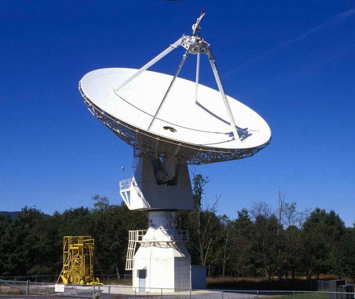
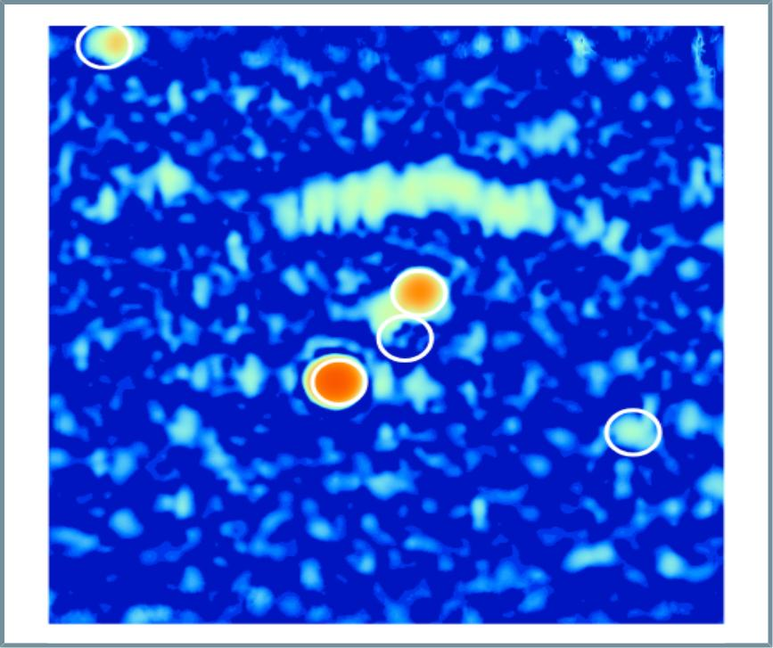
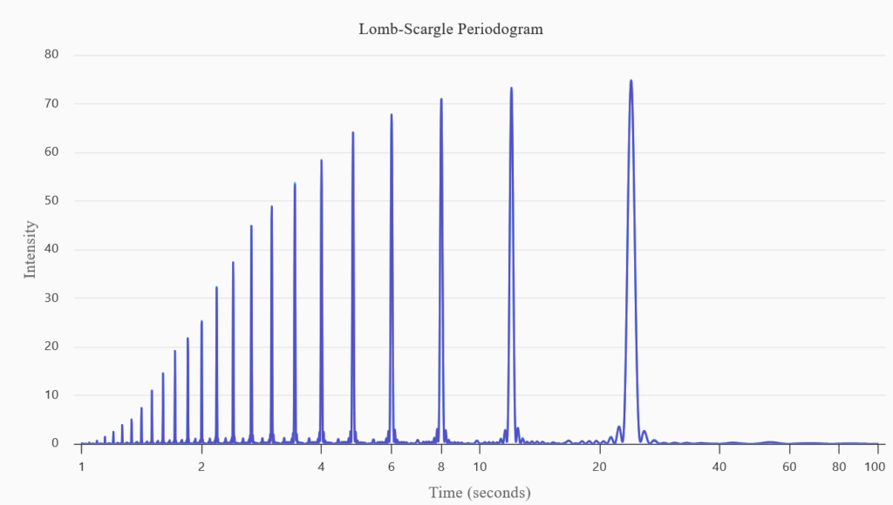
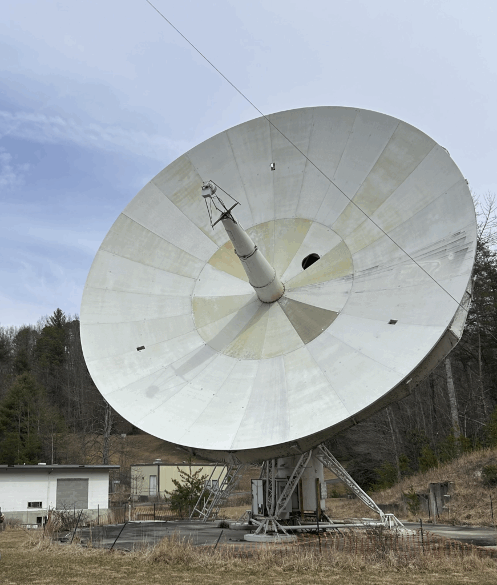

Reece Clark
Hey I am reece blaaaaahhhhhhhhhhhhhh
By Reece Clark
September 18, 2025
A 20-meter telescope located in Green Bank, WV. This telescope is currently responsible for the majority of Skynet's radio observations, and it was originally refurbished and added to the network in 2012.
When we look into space at night, most people see a lot of stars, but those stars do not capture the full story of what is above. Many stars are dim or obscured due to light pollution or other factors, but many more parts of the sky are truly invisible to the human eye. Most pictures of space are recorded in light that our eyes can see like a normal camera, however, there is so much more out there.
Radio astronomy aims to capture many of these invisible parts of the universe by looking at what our eyes cannot see. Typically, our eyes, and most cameras, can only view light with wavelengths from 400 to 700 nanometers. This is really, really small! Radio telescopes target much larger wavelengths of light up to 21 centimeters and sometimes even greater. These radio wavelengths are about half a million times longer than those we can see with our eyes and cameras. If a radio telescope worked like a camera, it would have extremely low resolution. Where a camera can display millions of pixels in one image, a radio telescope would only be able to show one pixel of the same image.
Radio astronomy has been unexplored because of the fundamental difference between the wavelengths easily observable by our eyes and radio telescopes. The first radio observation happened accidentally in 1933 when a large antenna was used as a test for shortwave radio communications by Karl Jansky. The first radio telescope was then developed in 1937 by the astronomer Grote Reber. Since then, radio astronomy has been receiving more funding with the installation of larger and larger radio telescopes. Yet, opportunities to explore the invisible sky are still quite limited for college students and many people have not even heard of radio astronomy.
Skynet is a robotic telescope network used by astronomers, students, and educators. Skynet specializes in traditional optical astronomy along with radio astronomy. The first installment of Skynet, launched in 2004, is used by 1 to 2% of all introductory astronomy courses with a second installment currently being developed. Skynet is a strong foundation for many students interested in space to connect with astronomy, and Skynet 2 aims to target even more students. As part of the Skynet 2 team, I have developed 2 radio astronomy tools to be used by students as a part of this project.
A radio image of the Orion system with the appropriate sources circled including the Orion nebula along with HII regions and a quasar. This is created with the radio source finder tool.
The first astronomy education tool I created allows any student to probe the radio sky using images taken by a 20 meter wide radio telescope in Green Bank, WV. A student can view radio astronomy images and explore the sources within the image by querying the coordinates in SIMBAD. SIMBAD is a website that hosts one of the most extensive collections of catalogs of sources, including radio sources. This website allows students to find the bright regions of their radio image. These objects could be quasars, supernova remnants, regions of ionized hydrogen, and so much more! Identifying these objects is very important to understanding astronomy, and this tool allows students to learn about them in detail. This radio source finder tool lets users explore all of the deep space objects that can emit radio waves.
The periodogram above is a calibration file with an artificial signal for aligning the receivers in the radio telescope. This graph serves as a good proxy for what a real pulsar’s periodogram looks like. The largest peak signifies how quickly the pulsar is spinning, as indicated on the bottom axis.
The second astronomy education tool I developed guides students in exploring pulsars. Pulsars are stars that spin very rapidly and emit light in radio wavelengths. This second tool allows students to go through three steps to calculate how fast the star is spinning: light curve, periodogram, and period-folding. While they sound daunting, the process of analyzing the pulsars becomes very easy for early astronomers. The light curve is responsible for showing the unaligned, messy data from the star spinning too quickly. This data is then sent to the periodogram device that records the period of the pulsar which students calculate themselves. Using this found period, the student can then align all the data to see just how quickly the star is spinning! This part of radio astronomy is critical to understanding pulsars and how they emit radiation along with other properties like mass and density.
These radio astronomy tools offer astronomers early in their career a way of exploring space beyond what we can see. Oftentimes, this branch of astronomy is not explored by students. Bringing this technology to the classroom helps make the study of astronomy more available to new students.
Radio astronomy is underexplored, and Skynet 2 will encourage a new generation of radio astronomers. With new radio astronomers, so much more can be discovered. Both tools have already been implemented into a course named the Multi-Wavelength Universe! (MWU!). This course targets those invisible parts of the sky such as radio waves. This course will soon be implemented across the United States in several universities in the coming year with the goal of bringing attention to astronomy outside of traditional optical astronomy. In the future, young astronomers will have the opportunity to explore what we cannot see in our invisible sky!
A 12-meter telescope located in Western North Carolina at the Pisgah Astronomical Research Institute (PARI). This radio telescope, along with other telescopes in Australia, will be integrated into Skynet 2. Credit: Reece Clark
Reece Clark is an undergraduate at the University of North Carolina studying Astrophysics and Geology.